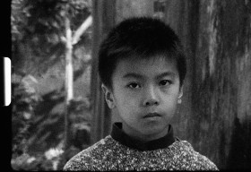

IEC Long
João Pedro Rodrigues, João Rui Guerra da Mata
Portugal 2014
31 min – HD – chin. OmeU
K: João Pedro Rodrigues, João Rui Guerra da Mata – T: Carlos Conceição, Elsa Ferreira, Nuno Carvalho – S: João Pedro Rodrigues, João Rui Guerra da Mata, Tomás Baltazar – P: João Fidueiras
Macao, Taipa Island, 2014. Das Wort „panchão“ wurde zum ersten Mal in Macao gehört. Vom chinesischen „pan-tcheong” oder „pau-tcheong”, Wörterbücher definieren es als eine regionale Eigenart, auch bekannt als „China cracker” oder „Chinese rocket”. Aber wer bewohnt die ehemalige Iec Long Firecracker Factory (Fabrik für Feuerwerkskörper) heute?
montag 12 okt 22.30 uhr werkstattkino
João Pedro Rodrigues geb. 1966 in Lissabon. Studium an der Filmschule Lissabon. Seine Filmkarriere begann auf dem Filmfestival von Venedig 1997 mit seinem Kurzfilm PARABÉNS!, der den Spezialpreis der Jury erhielt.
Filme (Auswahl) China China 2007 – Red Dawn 2011 – Morning of saint Anthony's day 2012 –The King's body 2013 – Mahjong 2013
João Rui Guerra da Mata geb. in Lourenço Marques, Mozambik. Als Art Director arbeitet er bei mehreren Lang- und Kurzfilmen mit, vor allem bei Filmen unter der Regie von João Pedro Rodrigues.
Filme (Auswahl) China China 2007 – Red Dawn 2011 – As the flames rose 2012 – Mahjong 2013